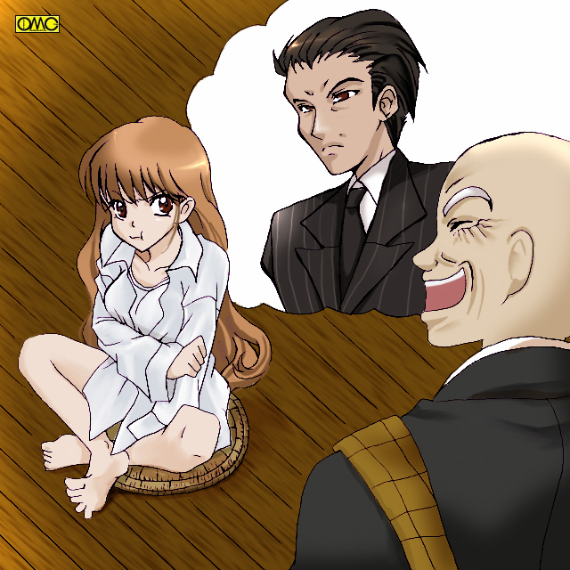
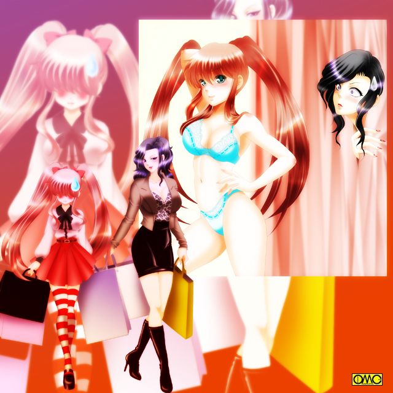

春。晴れた日。ある寺にて。
黒い…喪服の男たちが大挙して墓を囲んでいた。
その中心にはやはり喪服の男。
歳は４２。背はやや高め。がっしりとした体格。浅黒い肌。そこまでならともかくオールバックで鋭い眼光。
そして只者ではない雰囲気を漂わしていた。
囲んでいる男達も普通のイメージではない。
彼らは『やくざ』だった。
線香の香りが漂う墓前で手を合わせていた男は、静かに立ち上がると低い声であたりの男たちに言い渡す。
「これで一区切りついた。俺は悪いことは一通りやってきたが、殺しだけはしなかった。
だが、それも今日限りだ。てめぇら。明日にも殴りこみに行くぞ」
「へいっ」
ヤクザの男たちはいっせいに返答する。
「やってやりましょう。姐さんの仇」
「帝江州組に楯突くとどうなるか。非力組のやつらに思い知らせてやりやしょう」
「弔い合戦でさぁ」
慕われていたのも事実だが、これを口実に対抗組織との抗争が激化したとも取れる。
「よく言ってくれた。あの世でアイツも喜んでくれるだろう」
（よろこぶわけないでしょう）
「ん？」
帝江州組組長。銀次郎は辺りを見回す。
「サブ。何か言ったか？」
傍らの腹心に尋ねる。
「いいえ。別に」
細長いメガネの若頭。サブは首を横に振る。ヤクザと言うより銀行員に見えるインテリである。
「空耳か…まぁいい。いいか。てめーら。例え刺し違えてでもアイツの仇をとるぞ」
「おーっっっっ」
気勢の上がる一同。だがまた『声』が
（だからやめなさいっての。あんたを庇って死んだあたしの立場がないでしょう）
「空耳じゃねぇ！？ 千代。千代なのか？」
死んだ妻の名を呼び、銀次郎は辺りを見回す。
「姐さん？」
どうやらサブたち何人かには同じ声が聞こえたのか同様に見回している。さらに『声』が続き
（決めたわ。あんたに足を洗わせるにはこうするしかないようね。戦えない体にしないと）
それが終わると銀次郎は全身がきしむような激痛を覚えた。
「う…うぉあっ」
両手で自分の体を抱きしめる。
「親分！？」
動揺する子分たち。何人かはあたりのビルをとっさに見る。狙撃ポイントだ。だが血は出てない。音もしてなかった。それはない。
子分たちの見守る中、膝をつく銀次郎。
オールバックの髪が爆発的に伸びて行く。男のごわごわした髪ではなく、さらさらとした柔らかい髪に。
肩幅は縮まり、背丈も縮み。肌の色も白くなって行く。
「こ…これは一体？」
そしてとうとう。子分たちの見守る中で銀次郎は、華奢な美少女の姿になってしまった。
とりあえず本堂へと移動する。銀次郎含め狼狽する者たちの中で、サブ以外に冷静な人物がいた。
「ほほう。こりゃあまた…面妖なこともあるものじゃな」
その冷静な人物…悟ったと言うべきか。寺の住職。貴漢坊はにやりと笑う。
「うーっっっっ」
目の前にはすっかり可愛らしくなってしまった銀次郎。口を尖らすからなおさらだ。どっかと胡坐をかいている。
つぶらな瞳。長いまつげ。女には使わない表現だが童顔。いかにも子供。
身長は１７８センチから１５２センチへと。
体重も７７キロから４２キロへ。
上から７８（Ｂカップ）。５５。８０だった。
雪のように白い肌はシミ一つない。
細く高い、そして愛らしい声は元の声からかけ離れすぎている。
腰まで達する黒髪が艶やかに流れる。
元の姿のときに着ていたワイシャツが、そのまま腰まで覆っている形だ。
ズボンは腰周りが違いすぎてヒップにさえ引っかからない。見ようによっては悩殺スタイルだった。
「どこからどう見ても美少女だな。わぁっはっはっは」
豪快に笑い飛ばす。恥辱に打ち震える美少女組長。切れたのは当人より配下が先だった。

このイラストはＯＭＣによって作成されました
クリエイターの紫咲桂麻さんに感謝！
「ヤロウ。親分をコケにする気か？」
「許せねぇ」
「ぶち殺す」
いきり立ち、寺だと言うのに刃物を手にする。
「ば…馬鹿。やめろ。オメーら程度が敵う相手じゃねぇっ」
すでに遅し。チンピラ三人は住職に突っかかって行った…が。
「凄舞雷音珠」
「ぎにゃあああああっ」
数珠を手にした貴漢坊の舞いが作り出す雷で感電する。そして
「千波六手真理院手」
「ぶぁあおおおおおおおおおっっっっ」
嵐のように拳を見舞われる。まるで阿修羅の攻撃。さらに
「福陸大栄砲久住」
「あんぎぉあああああっ」
気を砲弾として打ち出す荒業。
必殺技のオンパレードで葬られていた。
「…だからいわんこっちゃねぇ。和尚に勝てる奴なんざいねえ。それでここは中立地帯になっているんだしよ」
精根尽き果てたチンピラたちは聞いてなかった。それを修行僧たちが運んで行く。
「しつけがなっとらんな。しばらくこの寺で預かるとしよう」
（仏門入りかな…また）
無礼を働いたものは強制的に剃髪され、修行させられる。
この運んだ修行僧も実はかつての配下だ。
「話を戻すか。これは恐らく御仏の慈悲。あるいはおぬしの亡き妻のそれかもな」
「…この仕打ちがかよ？」
丁寧に喋ればお嬢様で通りそうなイメージの綺麗な声である。乱暴な口調がまるでしっくり来ない。
「うむ。このままでは悪鬼羅刹となる。だがその姿ではそれもままなるまい。
どうじゃ？ いっそこのまま人生をやり直してみれば。真人間になる機会ぞ。それこそが奥方の望みと見たが？」
「冗談じゃねぇ。男で四十を過ぎてから、どうして小娘でやりなおさなきゃいけねぇ」
「だが、どうやって戻るつもりじゃ？」
「う…」
相手がオカルトとなると…さすがに手の打ちようがない。
「女性（にょしょう）がいやなら足を洗うしかないな。そうすれば奥方も解いてくれるかもしれん。
このまま男でヤクザを続けさせるといつかは破滅する。女でヤクザをしていくのはなお難しかろう。
だが、真人間になれば破滅は免れる。死するより例え女でも生き永らえて欲しい…とな｣
つまりこのまま女として人生をやり直すか。それとも足を洗うか。どちらにせよヤクザではいられない。
解決策は見つからない。仕方ないのでとりあえず引き上げとなる。
車に向かうときだ。トレンチコートの冴えない初老の男が歩み寄る。
刺客ではない。だが友好的には出来ない相手で、露骨に態度に出す黒服たち。
「よぉ。帰りか？」
「ええ。松沢さんも引き上げですね」
冷静に対処するサブ。
「ああ。ったく、やっちゃんが墓参りとなると付近の住民も怖がるんでな。出張らないわけにもいかんよ」
所轄の四課。暴力団対策の刑事だった。もちろん寺の周辺は制服警官が並んでいる。
「ところで親分はどうした？ 姿が見えないが」
実はいたのだ。小柄になったために男たちの陰に隠れてしまっていた。
「どこに目をつけてやがる？ 組長ならここにいるだろうが」
血の気の多い若いヤクザが揶揄されたと思い込み怒鳴ってしまう。
（馬鹿やろう…）
銀次郎が思ったときは遅かった。少女を組長と口走ってしまった。
「どこだよ？ おい。拉致じゃねぇだろうな？ この娘さん」
それでやっと自分の失言を悟るチンピラ。慌てて言いつくろう。そしてさらに墓穴を掘る。
「ち…違う。『組長』って言ったんじゃねぇ…『久美ちゃん』って言ったんだ」
（……殺す……）
青筋が浮き出る「久美ちゃん」。それとしらず松沢刑事はのんきに雑談を続ける。
「ほう。久美ちゃんか。可愛いお嬢ちゃんだな。誰の身内だ？ それにしても色っぽい格好だな」
住職には年頃の娘がなかったため服が調達できなかった。仕方なくそのままシャツだけの悩殺スタイルで組まで戻るつもりだったのだ。
代々続くヤクザの一家。それが関東帝江州組だった。
本拠もビルの事務所などでなく、和風の屋敷だった。
そこに黒塗りの車が帰ってきた。掃除をしていた若い衆などが列を作り出迎える。
「お帰りなさいませ。おやぶ…？？？？」
口をあんぐりとあけるのも無理はない。出て来たのはワイシャツ一枚だけの美少女だったからだ。
その美少女。変わり果てた銀次郎は、男たちの突き刺さる視線に耐えながら屋敷に。
頬を染め、うつむきながら歩く。ちなみに２６センチの革靴はぶかぶかで、小さな足にサンダルのように突っかけていた。
その姿に「アレは誰か？」より「なんて可愛い女の子だ」と話題になったのは言うまでもない。
「指、詰めな」
組に戻りつくなり銀次郎は冷たく言い放つ。もちろんあのチンピラにである。
「く…組長」
「やかましいっ。誰が久美ちゃんだ。赤っ恥かかせやがって。指を詰めて侘びいれろ」
（あんた。そんなことをいうのかい）
今度は墓で声を聞いた面々以外にも千代の声が聞こえた。
「あ…姐さん？」
きょろきょろと見回す。死者の声が聞こえてくればもっともだ。
（仕方ないね。意地っ張りだから。あたしが許させてあげるよ）
「千代。何を…」
銀次郎は突然、変な気持ちになる。
なんだか女でいることに違和感がない。
そう。一時的に心まで女に。それも１５の小娘の心に。
少女は土下座しているチンピラの手をとる。優しく、その柔らかい両手で包み込むように
「顔を上げてちょうだい。許してあげる」
笑顔でにっこり。可愛くにっこり。まるで生まれついての女の子のように愛らしく微笑む。
「組長」
思わぬ展開に驚きと、許されるかもしれない期待が入り混じるヤクザ。
「いや。組長じゃなくて『久美』って呼んで。ステキな名前をつけてくれてありがとう」
「それじゃ指は…」
「そんな野蛮な事しちゃ嫌っ。許してあげるって言ってるでしょ。
それからみんなもあたしのことを『久美』って呼んでね」
両腕の拳を顎に当て、可愛らしく言い放つ。
「聞いたか。親分じきじきの頼みだ。これからは『久美さん』とお呼びするんだ」
「へいっ。若頭」
許されたチンピラを先頭にやくざたちは部屋を出て行く。ニコニコ見ていた「久美」だが
「はっ？ オレは今、何を？」
「どうも姐さんに女の心にされてしまったようですね」
冷静に分析するサブ。しかも久美には女心の時の記憶が残っていた。
「な…なんて言葉遣いで…男を極めるはずのオレが…」
省みると猛烈に恥ずかしくなってきた。
許してしまったものは仕方ない。とりあえず服の調達に向かわせた。暫く待って届いた服は…
「おい…なんで『セーラー服』なんだよ？」
「へい。さすがに洋服屋で女物を買うのはこっぱずかしいんで。ブルセラで買ってきやした」
久美としては生地や構造は女向けでも、デザインは中性的なものを期待していた。
しかしこれでは逆に女の記号がさらにしっかりと。
「オレに…これを着ろと…」
しかし、ここで切れるとまた亡妻に少女の心にされてしまうかもしれない。
あんな恥ずかしい思いはもうたくさんだ。
かといって回りはみな大柄な男たち。サイズの合うものがなかった。仕方なく白い夏物のセーラー服を着る羽目に。
和風ヤクザの屋敷に、セーラー服の美少女と言うのもなかなか妙な取り合わせだった。
さらに言うと、女ッ気のない暮らしをしてきた面々。
そんな中にまぶしい肌を惜しげもなくさらした脚線美。
「はわわわ〜〜」
刺激が強すぎた。
「これでいいのか？」
「へいっ。とても可愛いです。久美さんっ」
「･････････」
苦虫を噛み潰した表情の久美。操られてといえどそう呼ぶのを自分で許可したのだ。翻せない。
それはいい。しかしわざわざつける必要のないセーラータイまでつけるのは？
「こんな感じかな？ おい。鏡ないか？」
「鏡だ。姿見をもってこい」
「曇りがあるならとりのぞけっ」
「おい。櫛かブラシをもってこい」
大騒ぎだった。
（気のせいか…いつもの怒鳴りつけたときより反応がいいような…）
そんなことを考えているうちに姿見が。
「どうぞ。親分」
「お…おう」
恐る恐る鏡を見る。そこにはどこの学園にもいそうな、普通の少女がいた。
ただ顔の形の整い方が並みよりは上だったが。
白い肌。健康的な頬の赤み。みずみずしい唇。
（これが今の顔か…情けねぇ。髪もぼさぼさだしよ）
無意識に髪をいじってしまう。
そのタイミングを待っていたかのように、若いヤクザがブラシを持って駆けつけた。
「失礼します。久美さん。髪を整えさせていただきます」
「あ…ああ。やってくれ」
久美と呼ばれて一瞬どなりかけるが、髪を整えてくれると言うので我慢した。
背の高い若いヤクザ。上谷は丁寧に長い髪をとかして行く。
（あ…なんか気持ちいい…）
髪の毛がすっと通るたびに、なんとなく気持ちよくなっていた久美。アンニュイな表情に。
年齢に似合わぬ色気のある表情に。
「さぁ。出来ましたよ」
言われて我に返る。改めて鏡を見る。
長い髪が三つ編みにされていた。そして髪の先には真っ赤なリボンが。
「いかがです？ 久美さん」
「バカやろう。誰がここまでやれと…きゃーっ可愛いぃ。ありがとう。これからあたしの髪の毛を任せていいかしら？」
「はい。喜んで」
そのまま鏡の前で嬉しそうにいろんな角度から見てみる久美。そして
「はっ？ またやっちまったのかっ？」
白い肌を桜色に染めて蹲る。その様子を隠れてみていた子分たち。生暖かい目で見守っていた。
（か…可愛い。親分…なんて可愛いんだ）
（前のときはついて行けないところもあったが、今の久美さんなら一生ついていきますぜっ）
（萌えーっっっ）
別な意味で、忠誠を誓っていた。
都内某所。暴力団事務所。
「帝江州の様子はどうだ？」
上等な「すかしたデザインの服」を着こなした男がソファにふんぞり返って聞く。
「動きはありません･･･と言うか、何かトラブルがあったのか浮き足立ってます。
それに組長の銀次郎がどこに雲隠れしたのか、墓参りからまるで姿を見せません」
「ふん。逃げたか？ それでもいいがな。それならこの非力組がやつらのシマを貰ってやるかな」
関西系暴力団・非力組。ここが帝江州組の抗争相手だった。
この男は先代の息子。穏健派の先代が死んで跡を継ぎ、一気に関東侵攻とばかしに帝江州組に矛先を向けていた。
送り込んだ刺客…鉄砲玉は銀次郎を拳銃で狙ったが、狙いがそれて傍らにいた銀次郎の妻・千代を射殺。
（銀次郎の怒りを恐れた刺客は警察に自主。非力組からの口封じを恐れて「自分の勇み足」の一点張り。確かに刑務所なら安全だ）
そして弔ってからひと段落のついた時点で、帝江州組が何かをしてきても不思議はなかった。
むしろないのが不思議だった。
「まぁいい。もう少し様子を見るか。監視を怠るな」
「はい」
朝。当然だが男物しかないのでその中でも比較的柔らかい下着。そしてＴシャツをパジャマにして眠っていた久美が目を覚ました。
ぼーっとした焦点の定まらない瞳で辺りを見回す。鏡に映る自分の顔を見て一瞬驚き、そしてため息をつく。
（夢じゃねぇのか…しかし、本当に小娘だな。まいったな…パンツもだが胸元も落ち着きゃしねぇ。しょうがねぇ。
元に戻るまでの辛抱だ）
「誰かいねぇか？」
可愛らしい声で怒鳴ると、十人くらいがいっせいに駆けつけた。
（まさか潜んでいたんじゃないだろうな）
そう思いつつも命令する。だが
「てめえ…オレの命令が聞けねぇってのか？」
すごんで見せてもファニーフェイスに少女声。だが目の前の男は平伏していた。
「すいやせん。親分。他のことなら何でもします。
非力組の組長のタマ（命）とってこいってんなら喜んで鉄砲玉になりましょう。
粗相を侘びろと言うなら指を詰めます。ですが…
「女物の下着を買ってこい」と言う御命令だけはどうか御勘弁を」
「じゃあなにか？ オメーはオレに女物のパンツを買いに行けと言うのか？」
「いえ。その心配は要りません」
サブが現れた。三十後半くらいの美女を連れて。とにかく大きな胸が目立つ女だった。泣きボクロが色っぽい。
「サブ…それにアンタは」
「三郎の妻。寿音（ことね）です。お久しぶりです…って、お話は伺いましたけど、ほんとに親分さん？」
「あ…ああ」
「可愛いっっ」
いきなり寿音は久美をその豊満な胸にうずめてしまう。
「うぐっ」
「あーん。なんて可愛いのかしら。うふふふふ。こんな綺麗な娘のお世話が出来るなんて幸せだわ。さぁ。綺麗にしましょうねぇ」
妖艶に笑う。すごんで刃物を振り回す男は慣れていても、こういう相手は対処法を知らない。
「ぷはぁっ。お…おい。サブ。どうしてここにお前の嫁さんがいるんだ？」
「何しろ男所帯ですからね。今の親分の世話役はやはり女の方がいいかと思いまして。下着の調達などもしてもらおうかと｣
「なるほど。それはさておきお前の嫁さん。どうにかしろ」
なんとか窒息から逃れた久美は腹心に怒鳴る。
「難しいですね。何しろ百合ですから」
「なにぃ？」
「何しろ三度の飯より女の子が好きと言う人なんで、それだけに大事に扱ってくれるでしょう。痒い所にも手が届くと思います」
「それはいいが…な…なんで百合女が男と結婚してるんだよ？」
「いえ。実は私が『薔薇』なんで…」
「な！？」
衝撃のカミングアウト。冗談には思えない表情。
「所帯持ちと言うと何かと相手の安心を誘えましてね。それで一緒になってます。いわば偽装結婚ですな。
だから今の親分の姿にも劣情を催したりしませんので御安心を。はぁ…まったく残念です。
いつか男同士。裸で杯を交わすのを夢見ていたのですが…」
ぞくぅ〜〜〜。じゃ。肉体的に可能な今となっちゃ…思わず両腕で胸元を庇う久美。
「ああ。御心配なく。繰り返しますが、今の親分にはそんな気が起きませんから。
組員たちも『小娘じゃなぁ』と思うものと『可愛いお嬢ちゃん…はぁはぁ』と恐れ多くて手の出せないと、どちらにせよちょっかいをかける奴はいないようです。
中には『育ちすぎてて興味がない』と言うのもいるようですが。
…話を戻しましょうか。私と寿音は互いに相手を認めてますので『男と女』と言うより『同胞』ですね。
だから世話役として私が一番信用できる女です」
「確かに…毒なんか盛ったりしないだろうが…」
別な意味で危ないんじゃないか…言いかけたが寿音自身にさえぎられた。
「下着を買いに行くんですね？ でしたら体を隅々まで洗いましょうね。汚れていたら恥ずかしいですからね。
ああ。安心してください。女の体の洗い方は手取り腰とり教えて差し上げますから。
さぁ。皆さん。お風呂を沸かしてくださいな」
「へい。とっくに沸かしてありまさぁ」
「あら。気が利くわね。さすがはアンタの下でやってる人たちだわね。さぁさぁ。親分さん。早速洗いましょう」
「やめてぇぇぇぇぇぇ」
抵抗むなしく。風呂場に連れて行かれて全て剥かれてしまう。
風呂場にて。当然だが二人とも一糸纏わぬ姿。
「あら親分。綺麗なお肌」
「そ…そうかい。アリガトよ」
警戒心バリバリの久美。この時点では『同性』だが気は許せない。
（しかし…すごいな…生唾物だぜ…このスタイル）
三十代と思えない寿音のプロポーション。
「この胸ですか？ うふふふ。女の子と揉み合っている内にこんなになっちゃって」
（ああああっ。そっち系は本当かよ。今すごくやばいんじゃないか。オレ？）
そして何気なしに鏡を。そこに映るのは紛れもない裸の少女。そして…自分自身。
（本当に…正真正銘の女だな…まだ子供の体だが、このままでいたらいつかこの女のようなプロポーションに…）
思考は泡の感触で中断された。
「うふふふふ。スポンジやタオルじゃこの珠の肌に傷つけちゃいそうですから、あたしがじかに洗って差し上げますね♪」
どう解釈しても『洗う』手つきじゃない。
「ば…バカ。子供じゃねぇし自分で」
抵抗するが
「あら？ 親分さん風俗に行ったことはない？」
「そ…そりゃ結婚前はあったけど…ひゃっ」
不意打ちだった。充分にあわ立てた石鹸を手に寿音が『洗い始めた』のだ。
未知の感覚に顔を赤くして耐えるが、思わず声が漏れる久美であった。
「はぁはぁ…はぁはぁ…」
茹ったのかそれ以外か、真っ赤に頬を染めて久美は風呂から上がる。
（なんてこった…気持ちよかった…大丈夫か。オレ？ 元に戻れるのか？）
ぼんやりと考えていたのでそこに子分（もちろん男）がいたことも疑問に思わなかった。
「親分。お拭きいたしやす｣
「おう。頼む…って。まてこら。どうしてここにいる？｣
何気なく応答したが、それがこの場合よくないことにやっと気がつく。
どうでもいいが全裸で仁王立ちは（肉体的にだが）中学生の少女としてはいかがなものかと…
「へい。もしも湯がぬるかった場合、あるいは無防備なところを狙った鉄砲玉が来ないように、そのほか用事を言いつけやすいように近くで控えてやした｣
いけしゃあしゃあと言い放つ三下。半目で尋ねる久美。
「……聞き耳を立ててたろ」
「滅相もない。親分のあえぎ声なんてこれっぽっちも…あ゛」
かぁーっと頬が赤くなる久美。なにしろなれてない感触だ。抑えなど効かない。
「……忘れろ」
殺してやりたかったが、どうせまた女心にされるのが目にみえていたのでやめた。これ以上は恥を掻きたくなかったし…
体を洗ったところで再び、唯一の女物であるセーラー服にを着てデパートへと出向く。
パステルピンクの洪水。他にも色とりどりの下着。ここはデパートの婦人服売り場。下着のコーナー。
久美は目がくらみそうだった。
「さぁ。親分。可愛い下着はここですよ」
「いや…こんなのを穿くのか…なんかちっちゃいし、やたらにひらひらしてるし。どうせ人には見えないんだし別にどんなんでも｣
「なに言ってるんです。親分さん。見えないところにもおしゃれするのが女ってものですよ」
「大体オレが買いにこないですむようにあんたが世話役になってくれたんじゃ？」
「それにしたって正確なサイズを知らないと買えません。今回だけですから。
さぁ。ブラジャーのサイズを測っちゃいましょうか。ついでに上下セットの下着だと迷わなくていいでしょう」
それからがひと悶着だった。メジャーを当てられるとその感触で蹲る始末。
どうやらことさら敏感な肌にされてしまったらしい。確かにこの肌では固い男物を着てられない。
なんとか試着にこぎつけた。男物ブリーフからショーツに穿きかえる。
（あ…柔らかい。なんか落ち着いた。上のほうも締め付けで窮屈かと思ったら、
なんだか誰かに抱きしめられているようで安心…だからなんでそんな発想が？）
デフォルトで女心になって来ている？
恐れた久美だが男物の着られない肌なのでやむなくランジェリーで。鏡を見る。
（うわ…不思議だがすっぽんぽんより下着姿の方がなおさら女になったって気がする…どうすんだよ。このまま一生女で過ごすのか…
……でも…結構可愛いかも…）
考えてみれば鏡の中の美少女はどんなポーズも自由自在。思い通り。ちょっと茶目っ気がでてきた。
（ちょっとくらいなら…）
笑顔でモデルのように腕を後ろに組んで可愛く立ってみたり、胸元に手を当てて無垢な少女を演出したり、果ては男性誌のグラビアモデルのように片手で胸を持ち上げ妖艶な格好をしてみたり
「親分さん。付け心地はどうです？」
長い試着に心配した寿音がいきなりカーテンを開けた。

このイラストはＯＭＣによって作成されました
クリエイターのｍｒ２さんに感謝！
帰り道。久美は無言だった。
「どうしたんです？ 親分さん」
わかっている答えをわざわざ尋ねる寿音。もしかしたらサドッ気もあるかもしれない。
「オレは自分が怖くなった…」
「あらあら。可愛かったですよ。殿方の前でやると喜ばれるかと｣
「ぜってぇやんねぇ。それとその服も着ないからな｣
「いいんですか？ 試着室でのこと。言っちゃいますよ」
「お…オメー。ヤクザを脅す気か？」
「今は可愛い女の子じゃないですか。さぁ。帰ったら早速、着替えましょうね｣
生粋の女に口げんかで勝てるはずがなかった。
大広間。そこに一同が控えている。久美と寿音の姿はない。
「お待たせしました。親分さんの登場です｣
「おおっ」
寿音の声が響くとざわめくやくざたち。
ふすまが開く。そこにはセーラー服から着替えた久美がいた。
フリルのついたピンクのソックス。生足を充分に見せ付けたスカートは赤いチェックのプリーツスカート。
淡いピンクのブラウスもフリルとレースをふんだんに使っている。
胸元もきちんとブラジャーをしたため、まだ発育中といえど存在感を示していた。
髪型も長い髪を左右に分けツインテールにしていた。テールの根本は赤いリボン。
強気は崩さないものの、恥ずかしさに頬を染める少女。図らずも全員の声が一致した。
「萌えーっっっっ」
「萌えゆーなー」
照れ隠しもあり思わず怒鳴る久美。
「さぁさぁ。みなさん。よく憶えてくださいな。これから親分さんはいろんな女の子の格好をしますから間違えないでくださいね｣
「へいっ。新しい服のときは全力で褒めさせていただきます｣
（考えてみれば･･･「女の子」は俺一人だから認識させることも要らないだろうに…さては着せ替え人形にしているだけだな）
げんなりとしてきた久美。
あくる日。久美が通りかかるある部屋では、ヤクザたちが本を見てああでもないこうでもないと議論していた。
「（馬の予想かパチンコの攻略かな）おう。オメーら。何の話だ。オレも混ぜろや｣
久々の男のシュミの話が出来そうでうれしくなってきた。
「あっ。くみ…組長。ちょうどよかった。ご本人の意見を知りたかったんで｣
「オレの？（予想でも聞きたいのか？ それともパチスロの攻略か？）。いいぜ。で、なんだ？」
「へい。やはり久美ちゃんには可愛い系だと思うんすよ｣
そういうと男は手にしていた本を見せる。
それは若い女の子向けのファッション雑誌。久美は青筋が立った。
「違いやすよね。やっぱ綺麗系ですよね」
別のヤクザもファッション誌を見ていた。
どうやら発行されているファッション誌の最新号を、片っ端から集めたらしい。
（帝江州組が…帝江州組が壊れて行く…）
心の中で血の涙を流す久美であった。
疲れた表情で別の部屋へ。するとまた若い組員が雑誌を開いていた。
（こいつらもファッション雑誌か？）
そう思ってこっそり陰から覗く。だが女の子のファッションの話にしては下卑た表情。
「かーっっっ。たまんねぇなぁ。この胸元。いいなぁ。こんな女と寝たいぜ」
ある意味では極めてノーマルな男の会話だった。
「そっすか？ アニキ。オレはこっちのスレンダーな女がいいっすよ。なんかこう…清純派って感じで」
「ばかか。おめー。雑誌に裸を載せてるような女に清純派がいるわきゃないだろ。
それならエッチな方が潔いってもんだぜ。とにかくこんな胸を背中越しによ」
ワイ談を展開する五人の男たち。それを陰で見ていて苦笑する久美。
（しょーもねー奴らだなぁ…ま、若い男だ。猥談くらいするか。どれ。オレもコミュニケーションって奴で加わるか）
気配を隠さずに部屋に入る。
「く…久美ちゃん」
「エロ本見ている現場を親分に見つかったチンピラ」の表情と言うよりも、
「エロ本を見ている現場を若い娘にみられた男の表情」だった。
「おう。楽しそうじゃねーか。オレも混ぜろや」
もちろんまったく男の感覚で言う。
「だ…ダメです。こんな話題に」
子分たちにしてみれば別な意味で男の感覚で返答する。
「いいからいいから。親分子分も関係ないって。続けろよ」
「いいやダメです。女子供のしていい話題じゃありやせん。当然こんな本も見ちゃ行けません」
「はぁ！？」
呆気に取られているうちに片付けられてしまった。そして散り散りになるやくざたち。残された久美は心の中でつぶやく。
（だれが…女子供だって？）
もちろんその日から「エロ禁止令」が出されたのは言うまでもない。
ちなみに使われているパソコンも「保護者機能」がしっかりと作用するようにされてしまっていた。
寿音のシュミには困ったが、それでも「同性」の相手が出来たのはよかった。
話が出来る。それだけでも気晴らしにはなった。
女になって四日目のある会話。
「親分さん。美容と健康のためにジョギングなんていかがです？」
さすがに生粋の女だけに、美への感心は人並み以上にある寿音。
「えー。いいよ。朝っぱらから走るなんざかったるい｣
「では散歩はいかがです？ 女の子になってからほとんど外に出てないでしょう｣
「ふむ…」
見た目は中学生である。しかも女子。繁華街などとんでもない。
大体からして店の人間に説明が面倒だし、それ以前に吹聴したくない。
だから夜遊びは絶っていた。そして女姿をさらしたくないので引きこもり状態だった。
「悪くねぇか。朝じゃ人気もないし。武器もってたら目立つしな」
これは襲撃の話。
「それ以前にその姿で親分さんとはわからないですよ」
「まぁな…」
考えてみれば刺客の心配なしに堂々と歩ける。その点だけなら性転換も悪くないか。
「よし。行こうか。公園にでも」
この会話は床下で聞かれていた。
「聞いたな？」
「へい」
配下のやくざたちである。
「分かっているな」
「了解でさぁ。野郎ども。早寝するぞ」
翌朝。久美を起こさないように早起きしたやくざたちは、竹箒とちりとりを持って公園に移動していた。
もちろん、久美が気持ちよく散歩できるように掃除する目的だ。
だが公園といっていたものの、どこを通るかわからない。
ゆえに考えられるあらゆる道を掃除していた。
早朝の散歩をしていた人たちはヤクザが大挙していたのに驚いたが、それが掃除していると知ると首は捻るが安心した。
だが夜遊び帰りの若者がジュースの空き缶をぽいっと捨てたときは大変だった。
「テメエ。なに考えてんだ」
「ポイ捨てなんざしやがって」
「街の美観を損ねるんじゃねぇ」
「ぎにゃあああああああっ」
哀れ袋叩きにされる若者だった。そうかと思えば
「困りますね。お嬢さん。犬の糞は飼い主がちゃんと始末しないと」
「あ…はぁっ…はわわわ」
強面。中には頬に傷のある男たちに囲まれた犬の飼い主の女は恐怖する。
「さぁ。これを差し上げますから始末のほうをよろしゅうに」
コンビニの袋とスコップだった。もちろんスコップは要返却。
「おい。その辺にしとけ。そろそろ親分が来るぞ｣
やくざたちは隠れた。そして言葉どおり寿音を伴い久美が現れた。
変装の意味もあるのだろう。
春らしいピンクのワンピース。赤いスニーカー。まだ髪は編んでなく、長い髪を流れるままにしていた。
とても女らしい格好なのだが、久々の外出の魅力が上回って女物に甘んじていた。
「おっ。公園なんてゴミだらけかと思ったが、綺麗じゃねぇか。気分いいぜ｣
（よかった…早起きして掃除した甲斐があった…）
声には出さないが喜ぶヤクザたち。
「うふふふっ。気に入りました？」
「ああ。晴れていたら散歩を日課にするのもいいかもな」
上天気に負けない輝く笑顔。隠れてみていたやくざたちは見ほれてしまった。
それからと言うもの、久美と寿音の散歩は日課になった。
どこに出向くかわからないので、組員たちはとにかく女の足で歩ける範囲を片っ端から掃除して回っていた。
さらには悪臭を考慮してドブさらいまでしていた。
おかげで鼻つまみ者だったはずのヤクザたちが、いつの間にか街の人たちに受け入れられていた。
今日も久美たちは散歩に出た。ある家の玄関先の花壇。
「わぁ。もう咲いたんだ｣
駆け寄る久美。どうでもよいが「おっ」じゃなく「わぁ」がだいぶ女の子に近づいていると言うか…
そもそも花に駆け寄る美少女と言う時点で既に。
「綺麗だな」
小さな鼻を寄せて香りを嗅ぎ取ろうとする久美。
「お嬢ちゃん…何なら一本もって行くかね｣
早起きの老人だった。どうやら花壇の世話をしているらしい。
「いいんですか？」
胸の前で手を組んで顔を輝かせる久美。
「ああ。花の好きな人に悪人はいないしのぅ。そちらのお嬢さんもいかがかな？」
「ありがとうございます」
礼儀正しく礼を言う寿音。人生の先輩に対する敬意だ。
「見てたな？」
「へいっ」
例によって隠れて護衛と掃除をしていたやくざたちである。
「わかってんだろうな」
「もちろん」
翌朝。久美は目を覚まして驚いた。なにしろ庭が花畑になっていたのだから。
「ど…どうしたってんだ？」
もちろん一晩かけてヤクザたちが植えていたのは言うまでもない。
久美が気に入れば何でもしてしまう。
「組長だから」と言うより「久美ちゃんだから」のようだ。
「あら。ステキじゃないですか」
添い寝していた寿音が軽く驚いたが対応した。
「いや。しかし一晩で…あ。これはオレの好きな花。あ。こっちも」
不思議さより浮かれ気分が先に立つ久美。
花と戯れていた。例によって生暖かい目で見守るやくざたち。
昼ごろ。手の空いた時間。
「へっへっへ。どうだ。お散歩中の久美ちゃんだぜ｣
「お。いいね。それじゃこっちの花と戯れる久美ちゃんの写真のデータと交換で」
デジカメやレンズつきフィルムを手にした男たちが、アイドルの写真を交換するように久美の写真をやり取りしていた。
２週間がたった。未だ帝江州組に動きはない。それどころか組長･銀次郎も姿を見せない。
「妙だな？ 連中何を浮ついているんだ？ 銀次郎はもしかしたら失踪したのか？ だからやつらは浮ついている？
はっ。だとしたらとんだ腰抜けだな。てめえの妻が殺されてだまってるなんざな」
非力組組長。若干２７歳の凱（かい）は首を捻っていた。
「もしそんな腰抜けなら俺自身で首を取ってやるところだが…もうちょっと様子を見るか。いいか。若いやつらを帝江州の連中に突っかからせろ。
やつらがやる気ならこれを口実に戦争をおっぱじめるはずだ。ほんとに腑抜けか、あるいは待ち構えているのか確かめる」
「へいっ」
その日から街中でチンピラ同士の喧嘩が目立ち始めた。
ひどいのになると両手両足の骨折で、ミイラのようにされたものも。
誰が何のためにかは明白だった。
「チクショウ。非力組の奴ら。調子に乗りやがって｣
「殴りこんでやりましょう」
怒り心頭の組員たちは頭に血が上っていた。
「待て。今は堪えろ」
「なんでです。親分」
「ここまでやられて黙っていられますか？」
「そもそも姐さんのあだ討ちも中止したままですぜ」
「…う…」
圧倒される久美。確かに変身させられる前は「あだ討ち」する気は充分だった。
しかし今のこの自分の非力な体。そして骨抜きになった組員たちでは、のこのこ乗り込んだ日には返り討ちの確率が高い。
………実は骨抜きにしたのは誰あろう久美なのだが……
「まずいですね。親分。連中、今にも殴りこみに行きそうです｣
さすがの冷静沈着なサブも不安を隠せない。彼もここで仕掛けるのは得策ではないと読んでいた。
「くっ。だがオレの言うことすら聞きそうにねぇ」
「ひとつだけ妙案が」
サブの提案に表情を輝かせる久美。
「あるのか？ いい手が」
「この手なら確実かと」
耳打ちするサブ。驚いて大声を出しかける久美。かろうじて堪えて小声で反論。
「おめぇ。オレにそんなまねをしろってのか？」
「昔からとてもよく効くと相場が決まってます」
確かにそうだ。千代にもよくやられた。納得はしたが
「仕方ねぇ…不本意だが…逆アプローチ。搦手で行くか…｣
唇をかむ久美。
意を決すると下を向く。
「うっ…うっうっ…」
嗚咽を漏らし、膝を折る。闘争心が高まっていた一同は驚いて注目する。
「お…親分？」
うろたえる一同。親分が泣いている？
「どうして…どうしてあたしの言うことを聞いてくれないの？」
顔を上げた久美は目に涙をためて、かすれるような高い声で哀願する。
「く…久美ちゃん」
「お願いっ。あたしのために喧嘩はしないで」
祈るようなポーズをとると「おおおーっっっ」と怒声が。
「わかりやした。久美ちゃんがそこまで仰るなら」
「あっしらの忍耐力を見ててくだせえ」
「だから泣き止んでください。久美ちゃん」
効果絶大。組員たちの暴走の矛先が変わった。非力組への殴り込みから久美への愛に。
（止めたのはいいが…男として…何か大事なものをなくした気がする…）
組員たちの前でウソ泣きまでして見せた久美だが、心の中では本当に慟哭していた。
とうとう千代の手がなくても、女らしく振舞えるようになってしまったのでは無理もない。
非力組の事務所。
さすがに無抵抗とは思わなかったらしい。
血気にはやる凱はそれを腰抜けと評価した。
「どうやら本気で腑抜けのようだな。ようし。なぐりこむぞ」
「しかし組長自らが」
「こいつは初陣だ。それくらい俺自身の手でやらんでどうする。帝江州の首はオレが取る｣
帝江州組。久美の前に屈強な四人の男たち。
「サブ。なんだ。こいつらは｣
むさくるしいなぁ…と苦笑しながら言う久美。
「いくらその姿でもやはり護衛はいると思いましてね。親分とはわからなくともここに出入りしていたら関係者。
へたすりゃ親分の娘くらいに思うかもしれません」
「千代は子供の産めない体だったがな」
亡き妻を思い出してしんみりする。
「そういえば姐さんは最近？」
「ああ。様子見なんだろうな。感じなくなった。見てるとオレが切れるたびに心まで女にしてしまうからだろうな」
「もう充分に女らしいです…ですがその体でよかったですね」
「こんなガキの体がか」
「そりゃそうですよ。いきなりこんな胸がついたら親分さんもバランス崩しちゃいますよ｣
これは寿音の発言。巨乳だけに説得力がある。
「それに親分さん。大人の女ともなりゃハイヒールくらい履きますよ」
「う…確かにアレは履きたくないな。女の足だから多少はいいかもしれないが、それこそバランスがな…で、何の話だっけ？｣
「彼らのことです。とにかくいざと言うときは親分の盾となり、命を捨てて親分を守ります｣
「お…オレのために命を」
その侠気にくらっときた。
「へい。久美ちゃん。俺たち『親衛隊』がついてます。どうか安心してくだせぇ。つきましては口上を一つ｣
男たちのリーダー格が言う。
「うん。そーか。そーか。やってくれ」
すっかり上機嫌の久美。その前で男たちは黒服を脱ぎ、そろいのはっぴを着る。そして蛮声をあげる。
「せぇーのぉ。久っ美ちゃーん」
「……はい？」
目が点になる久美。
「声が小せぇ。もう一度いくぞ」
「へいっ。久っ美ちゃああああああん」
「サブ…もう一度聞くが…なんだ？ こいつらは？」
笑顔が引きつる久美。よく見ると彼らのはっぴには『愛 羅武 久美』と。
「確かに親衛隊のようですな…アイドルのですが…」
「あのなぁぁぁ。誰がアイドルだ」
そのときだ。
「大変だァッ。殴りこみだっ｣
「なんだと？」
一瞬にして張り詰めた雰囲気に。
「二代目…」
「なんだ？」
すっかりテンションの上がっている凱。それに恐る恐る若頭が尋ねる。
「殴りこみはいいんですが…いまどき銃もなしと言うのは」
「バカやろう。標的は帝江州だけだろう。流れ弾が堅気の衆に当たったらどうする？」
巻き添えを心配するヤクザも珍しい。
「それにな…飛び道具は野暮だ。やっぱ相手に斬られるかも知れねぇ斬りあいが、やりあってる実感がしねぇか？」
はあーはぁーと息が妙に荒い。
（バ…バトルマニア）
もっともこれが反対を受けたかと言うと違う。
密輸は無理。手に出来たのは粗悪な改造拳銃くらい。しかも射撃訓練も出来るわけじゃない。
それは銀次郎を狙ってそれが外れて千代を撃ち殺した件でも証明されていた。下手したら味方を撃ち殺しかねない。
だから初めから斬りあいの方が自信を持つものが多かった。
そこら中で切り結んでいる。
帝江州組にしても銃はなかった。だから斬りあいになる。
これが意外にしぶといのだ。
「な…なんだ？ これが腰抜けの太刀筋かよ？」
「ぬふふふふふふっ。ワシの命なんざぁくれてやる。だが久美ちゃんにだけは指一本さわらせねぇ」
「久美ちゃん？ 組長の間違いだろ。どっちにしろいい根性だ」
そうなのだ。子分たちは「久美ちゃん」を愛してしまった。
壊すものと護る者。我欲と愛情。己が身一つと愛するものを守ること。
どちらが強いか明白だった。
だから奇襲にもかかわらず対等に遣り合っていた。
「どういうことだ？ どうしてこいつらはこんなに強い？」
非力組二代目・凱も戸惑っていた。
「おかしいだろ？ 組長不在と言うなら頭がないも同然だぞ。こんなに統率された動きなんざできるはずがねぇ」
「どうやら代理がいるようです」
「代理だと？」
切りかかってきた帝江州のチンピラを弾き飛ばして凱は尋ねる。
「なんでもやつら。しきりに『久美』と言う名を口にしてるそうで」
「久美？ 発音違いだろう？ 組の」
「ちゃん付けでもですか？」
「……どうやら確かめないといけねぇな」
凱は奥まで乗り込む決意をした。
その奥ではもめていた。
「親分。後生ですから逃げてください」
「うるせぇ。子分たちが命張っているのに、組長の俺が逃げられるか」
サブの制止も聞かず久美は飾ってあった刀を取る…が…
「お…重いっ！？ なんだこの重さはッ！？ 片手で振れたはずなのにっ」
「親分さん。今は非力な女の子なんですよ。逃げてください。その小さい体ならもぐりこむ場所もいくらでもありますし」
「だ…だが…」
「子分たちが命張って守っているのに無駄にする気ですか」
それを言われると痛かった。
悔しかった。この非力な体が。
「……いや。逃げねぇ。ここで逃げたらそれこそあいつらに対する裏切りだ。ヤクザなんてやってねぇ」
「親分！？」
まるでそれを待っていたかのようにふすまが開いた。
血を流して蹲る親衛隊。重傷だが命に関わる部位ではない。
それを乗り越えて凱が乗り込んできた。
「久美ってのは…アンタか？」
寿音に尋ねる。寿音は首を横に振る。
「じゃあ…まさか…こっちの小娘が…」
これには驚かされた。組長の代わりを務めるならそれなりに人生経験があるかと思い込んでいた。
まさかこんな年端も行かぬ子供とは。
「もう一度聞く？ 久美と言うのはお前か？」
言うなり目にも留まらぬ抜刀術で久美の首筋に刃を当てる。
「…！？」「親分…」
ただ見守るだけとのサブと寿音。久美はきりりとした表情で凱を睨み付ける。
「ああ。あたしは妻の菩提を弔う旅に出た銀次郎に代わって帝江州組を預かる久美さ」
無意識で久美は自分を「あたし」と女の自己代名詞で表現していた。
「ふざけるなっ。お前のような小娘に組長が務まるか。言え。銀次郎はどこだ？」
少しだけ刀を動かす。首筋から赤いものが。しかし久美は表情一つ変えない。
「言う必要はない。いいかい。この組の人間は義理の兄弟。家族なんだ。
あたしにとっちゃ子供も同然なんだ。母親が子供を守るのは当然だろ。
例え殺されても、あの連中はあたしが守る」
そう。母性。健気に慕われているうちに母の愛に似たものが芽生えてしまった。
だから思わず自分を「あたし」と言っていたのだ。それだけ女に近づいていた。
にらみ合う美少女と二枚目。凱は静かに刀を下げる。
「に…二代目？」
「引き上げるぞ」
踵を返すとまっすぐに出て行く。
若頭の引き上げの声に攻めていた非力組員たちもついて行く。
「やろう。待ちやがれ」
当然すんなり退却させるつもりのない帝江州組員たちだが
「深追いはするな。けが人の手当てが先だ」
サブの命令で追撃は諦めた。それより何より首筋から血を流す久美の姿に慌てふためく。
その久美が膝を折る。
「親分！！」
「……なんてこった…ついに自分のことを芝居抜きで『あたし』とまで…オレはそこまで…心から女になってしまったのか」
脱力の原因はてんで違っていた。
床にへたり込み、羞恥の赤い顔で見上げる美少女。
ついさっきまでの闘争心は霧散して、組員たちも生暖かい目に。そして叫ぶ。
「萌えーっっっ」
「だから萌えって…あつつ」
首筋を押さえる。慌てて救急箱が。出血は派手だがかすり傷。脅し以外の何者でもなかった。
他の組員も入院を余儀なくされたものはいても死亡者はなかった。
暫くして…千代の眠る寺にて。
墓前で手をあわせるセーラー服姿の久美。
女物の礼服がないため一番いいものを着てきたのだ。
（なぁ千代…女になってみてわかったよ。
男って……バカだよなぁ…でも可愛いよな。あんなに健気に…
それも教えたかったのかい？
不思議なものだな…男のときは気がつかなかった『男のよさ』に、この姿になったら気がついたよ。
もう暫くくらいは女でもいいかもな…
お前はそれを考えさせたくて途中からいなくなったのか）
『二人っきり』になりたくて誰もつれてきていなかった。
「長い語らいじゃな」
「和尚」
「邪魔して悪いが客人じゃ」
貴漢坊の影から現れたのは…
「て…てめぇ…非力組の二代目」
「よう。ここに来れば会えると思っていたよ。誰にも邪魔されずにな」
（しまった…中立地帯とこの姿で油断した…丸腰もいいところだ…）
凱は右手を後に回している。トレンチコートの裾でまるで見えない。
「そう身構えるな。武器なんかねぇよ」
（信じられるか）
いつでも逃げ出せるように半身の体勢をとる久美。それにはかまわず語り続ける凱。
「ちと聞きたいことがあってな。この前のあれ。帝江州組を守ると言うのは本気か？」
「あ…ああ。本気だ」
その言葉にはウソ偽りはない。
「そうか…じゃ組を潰すのはやめるぜ。今この瞬間に抗争は停止だ。そのかわりっ」
隠していた右手を差し出す。その手にはバラの花束が。
固まってしまった久美。何とか言葉を搾り出す。
「？？？？？？？…なんだ。こりゃ？」
「惚れたぜ。久美」
「なっ？？？？？？」
照れて赤くなる凱。強引に久美の手に花束を持たせる。
「あの修羅場での度胸。慕われるカリスマ性。そして何よりその美しさ。
潰すんじゃなくて合併。いや。結婚だ」
どうなら脳がばら色になっているらしい。久美のほうは思考停止中。
「いい返事。待っているぜぇぇぇぇぇ。あばよ」
キザ過ぎたか照れ隠し気味に足早に立ち去る凱。
「は…ははは…」
花束を持ったままぺったんこ座りを墓前の砂利道でしてしまう久美。
「わあっはっはっ。憎しみより愛を選んだか。奥方はそれを望んでおぬしを女性にしたのかもなぁ」
また豪快に笑い飛ばす和尚。それを下からきっとにらみつける久美。
「じょ…冗談じゃねぇ。前言撤回だ。
千代ぉぉぉぉぉ。早く俺を男に戻せぇぇぇぇぇ」
その叫びは晴れた空にむなしく木霊した。
その後。帝江州組と非力組には抗争は一切なかったと言う。
影に一人の少女の存在があったと言うが、少女が何者かはわかっていない。
あとがき
いきなり爆弾発言ですが…僕はヤクザ物の映画やドラマを見たことがありません（ちゅど〜ん）
それでどうしてこんな展開を考えたかと言うと、元々は海賊が宝箱を開けたら呪いで船長が女の子にと言う話だったのです。
ですが海賊の時代のどこかの国より、現代日本の方が話を作りやすかったので。
別に男ばかりの世界ならプロ野球でも工事現場でもいいのですが、これが一番コミカルかなと言うだけです。
同じ命令でも男がするのと、女がするのでは方法が違うと思うんですよね。
男だと強引に従わせる人も多いです。その点ではまさにヤクザと言うのはぴったりのモチーフでした。
女だと上手く誘導する。『お願い』する形。この変化が面白いかなと。
それがあの「あたしのために喧嘩はしないで」で。
いつも変化球ですが今回は直球。
突然、女の子になって戸惑う主人公と、状況を喜んでいる周辺。
ＴＳＦコメディの原点に戻ったつもりです。
ヤクザ物としては大間違いな作品でしょうけど、僕の書きたかったのはＴＳＦコメディですし（無責任だぁ）
久美のネーミングは作中そのまま。苗字は考えてません。ちなみに帝江州は苗字ではないです。
サブはヤクザものでのよくある名前。サブなんでああいう嗜好の人に（笑）
あと女に興味がなければ冷静かな…と。おたおたする久美と萌え萌えする（笑）組員たちばかりなので冷静な人もほしかった。
奥さんは読み方変えてみてください。サブの相方だし（笑）もっとも名前元ネタの雑誌は百合な雑誌じゃなくその逆と聞いてますけどね。
ネーミングといえばヤクザの組だけに慎重に。
ありえないネーミングした上でぐぐってみて、同じ名前がなかったのでＧｏサイン。
帝江州は説明無用でしょう。非力組はありえないのと「太陽にほえろ」の響組のもじり。
千代は時代がかっていればそれでよかったネーミング。『組長』…『久美・千代』と気がついたのは後から。
序盤、幽霊として出て来たのはあまりあだ討ちが重くならないように。
それとでたらめな世界の表現で。そして変身の理由付け。
あと強引に女の子の人格に変えるのは、やくざ風責任の取り方を回避するため。
コメディなのでなるべく入れたくなかったので。
和尚…貴漢坊は寺の場面で始まって、寺の場面で終わることもあり必要でした。
また銀次郎に説教できるだけに人生経験も豊富。そして腕っ節も。
イメージとしてはマス○ーアジア・東方○敗かな。
ちなみに彼の持つ技。もちろん駄洒落です。一つ読めれば全部わかると思います。
彼自身も暴れ者で、だから名前が『貴漢坊』（きかんぼう）
本当は光明寺の和尚で破戒堕（はかいだ）とも名前を考えてましたけど（笑）
シリーズ化してもパターンに陥ると思うのでその構想はないです。
（と言うか『湯の街』『着せ替え』と加えて自サイトのもあるので）
だから思いついたネタは惜しげもなく投入。でもちょっとだけ
夏場で露出の高くなった久美。しかも男の感覚で恥じらいがないから見せまくり。
それで組員たちが萌えまくりというのも面白そうだと思いますけど。
あるいは『学をつけよう』とカモフラージュの意味で入学してしまい、影からやっちゃんたちが色々しでかす…これだともうＴＳ関係なくなっちゃいそうだな（笑）
そしてシリーズ化したら着地を考えないといけないので、やっぱやりそうにないです。
でももし、次があったら毎回花束を抱えてやってきては、肘鉄食らう凱なんてものがありそう（笑）
ひたすら『オバカ』に徹しました。特に名もなきヤクザたちを滑稽に。かつ愛嬌たっぷりに。
ほんの一時、いやなことも忘れて笑っていただければ何よりの幸いです。
今回もお読みいただきありがとうございました。
次の作品でお会いしましょう。
城弾